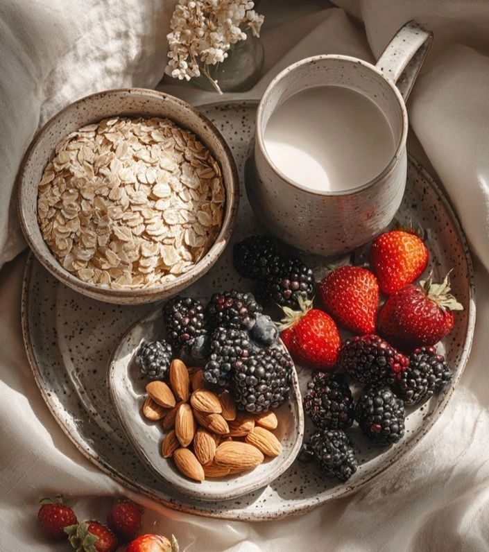

I don't know about you, but when I would hear "hormones", I typically thought of estrogen, progesterone, and testosterone. It wasn't until I learned more that there are many different hormones. But one hormone often overlooked — insulin — has a powerful influence on your energy, weight, mood, and even gut health. And when your body becomes resistant to insulin, it creates a ripple effect that can leave you feeling off-balance in more ways than one.
Let’s break it down in a way that’s simple, practical, and empowering.
What is Insulin Resistance?
Insulin is a hormone made by your pancreas that helps move glucose (sugar) from the food you eat into your cells for energy. Think of insulin as a key that unlocks the door to your cells.
With insulin resistance, the “lock” on your cells becomes rusty. Your body has to pump out more and more insulin to get the job done. Over time, this can lead to higher blood sugar, inflammation, and eventually metabolic issues like prediabetes or diabetes.
How Insulin Resistance Affects Your Hormones?
Insulin resistance doesn’t just stop at blood sugar — it affects nearly every hormone system in your body:
- Ovarian hormones (estrogen & progesterone): Insulin resistance is strongly linked to conditions like PCOS, irregular cycles, and trouble with ovulation.
- Stress hormones (cortisol): When blood sugar spikes and crashes, your body pumps out cortisol to “rescue” you, leaving you feeling wired, anxious, or exhausted.
- Thyroid hormones: Chronically high insulin and inflammation can slow thyroid conversion, which may affect metabolism, energy, and weight.
When insulin is out of balance, it can disrupt your entire hormonal system.
The Gut-Insulin Connection
Here’s where it gets even more interesting — your gut health plays a big role in insulin sensitivity.
- Gut bacteria balance: Certain bacteria in your microbiome help regulate blood sugar. An imbalance (dysbiosis) can make insulin resistance worse.
- Leaky gut & inflammation: When your gut lining is compromised, inflammatory molecules can enter your bloodstream, fueling insulin resistance.
- Digestive symptoms: Bloating, irregular bowel movements, and cravings often show up alongside blood sugar swings.
When we nourish the gut, we also support better insulin sensitivity — and vice versa.
3 Practical Tips to Reduce Insulin Resistance
Balancing insulin doesn’t have to feel overwhelming. Small, consistent steps add up:
- Pair protein and fiber with carbs
Instead of eating carbs alone (like toast, chips, or fruit by itself), pair them with protein and fiber. For example, have apple slices with almond butter or roasted sweet potato with grilled chicken and greens. This slows the release of glucose into your bloodstream, keeping insulin steady. Also, always eat your protein and fiber before your carbs first.
- Move your body after meals
A simple 10–15 minute walk after eating can lower blood sugar and improve insulin sensitivity. Even light movement like stretching or dancing in your kitchen makes a difference. Think of it as a way to “use up” the fuel you just ate.
- Prioritize whole, colorful foods
Fill your plate with foods that fight inflammation and feed your gut: leafy greens, berries, olive oil, salmon, beans, and fermented foods. As 1 Corinthians 6:19 reminds us, our bodies are temples — and choosing nourishing foods is one way to care for that temple.
The Bottom Line
Insulin resistance is more than a blood sugar issue — it’s a hormone disruptor and a gut health challenge. The good news is that with simple, consistent changes, you can restore balance, support your hormones, and feel more energized in your daily life.
Taking care of your insulin is one step towards a healthy lifestyle!